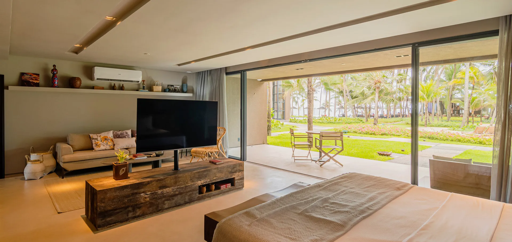

28OUT
Fortaleza → Icaraizinho
Chegada ao Ceará e início da viagem
Chegada prevista ao Aeroporto de Fortaleza às 19h40. Recepção e transfer privativo para Icaraizinho em veículo climatizado.
Transfer privativo€ 178,72
Jeri Rota · Ceará, Brasil
Edmond Michel & Caroline
28 de outubro a 6 de novembro de 2026
Icaraizinho Jericoacoara Flecheiras Taíba
Visão geral
Uma viagem privativa desenhada para unir hotéis de charme, esportes, paisagens naturais e experiências locais com conforto em cada deslocamento.

Recomendações da Jeri Rota
O roteiro foi estruturado respeitando a ordem geográfica solicitada pelo casal e equilibrando experiências, esportes, natureza, gastronomia, períodos livres, conforto e deslocamentos.
A programação mantém espaço para aproveitar cada destino sem transformar a viagem em uma sequência apressada de compromissos.
Roteiro privativo
Serviços selecionados para o período de 28 de outubro a 6 de novembro de 2026.
Fortaleza → Icaraizinho
Chegada prevista ao Aeroporto de Fortaleza às 19h40. Recepção e transfer privativo para Icaraizinho em veículo climatizado.

Hospedagem · 28/10 a 01/11
4 noites · Suíte Mana
Icaraizinho · Experiência 1
Passeio terrestre privativo com duração aproximada de 4 horas por Praia de Caetanos, Local Centenário, Coqueiros da Preguiça, Praia do Jegue, Lençóis Cearenses e lagoas naturais, com parada para almoço.
Alimentação não incluída.
Wing Foil em Icaraizinho
Duas pessoas com dois instrutores simultaneamente, equipamento completo e deslocamento local incluído. A programação será adaptada para Caroline, iniciante, e Edmond, com aproximadamente 20 horas de experiência.
Icaraizinho · Experiência 2
Passeio terrestre com navegação pelo encontro do rio com o mar, Túnel do Amor, Ilha das Ostras, Lagoa da Cobra, dunas e paisagens naturais.
Icaraizinho → Jericoacoara
Deslocamento reservado para o casal, seguindo a rota planejada entre os dois destinos.

Hospedagem · 01/11 a 05/11
4 noites · Bangalô duplo
Inclui café da manhã, acesso às áreas do hotel e transfer disponibilizado pelo hotel para Rancho do Peixe/Preá em horários definidos.
Wing Foil em Preá
Dois participantes, dois instrutores e equipamentos completos. Inclui Jericoacoara ↔ Preá, deslocamento para lagoa e possibilidade operacional de barco de apoio para Caroline.
Idiomas disponíveis conforme a operação: francês, inglês ou português.
Passeio privativo em buggy pelas paisagens do lado leste de Jericoacoara.
€ 107,23Passeio privativo por Guriú, mangue, Tatajuba, dunas e paisagens naturais.
€ 107,23A visita à Pedra Furada será organizada em um período compatível com a programação.
Jericoacoara → Flecheiras → Taíba
Transfer privativo com parada em Flecheiras para praia, piscinas naturais se a maré permitir e possibilidade de almoço.
Taíba
Após a chegada, a programação reserva um período especial para a atmosfera da vila, suas praias, o final de tarde, o pôr do sol caso o horário permita e a gastronomia local.

Hospedagem · 05/11 a 06/11
1 noite · Vila Árvore
Dois participantes, dois instrutores e equipamentos completos.
Saída organizada para chegada ao aeroporto até aproximadamente 18h30. Voo previsto às 21h50.
€ 178,72
Gastronomia
A Jeri Rota fará recomendações e poderá auxiliar nas reservas durante a viagem, priorizando culinária regional, pescados, frutos do mar, ingredientes locais, restaurantes de charme e experiências compatíveis com o perfil do casal.
Importante: refeições não expressamente incluídas nos hotéis e serviços serão pagas diretamente pelo casal.
Cultura e experiências
Conforme a programação disponível nas datas, a Jeri Rota poderá orientar sobre forró, capoeira, manifestações culturais, experiências locais e massagens.
Atividades sujeitas à programação e disponibilidade; nenhuma está apresentada como garantida.
Taxas e custos locais
Valor válido por 10 dias a partir da emissão desta proposta.
Suporte Jeri Rota
Nosso time estará disponível para prestar suporte relacionado aos serviços contratados, do primeiro deslocamento ao transfer final para o aeroporto.

Investimento
O investimento total considera a composição comercial completa da proposta. A alternativa do Carmel com café da manhã e jantar será ajustada caso escolhida. Conversão de referência: € 1 = R$ 5,5953 (BCE, 07/10/2026).
Pagamento
Pagamento integral antes da efetivação das reservas.
 Wise
Wise PayPal
PayPalCondições da viagem
Como esta viagem reúne diferentes hotéis, escolas de Wing Foil, operadores de passeios e empresas de transporte, cada serviço possui sua própria política de cancelamento e alteração.
Após a confirmação das reservas, eventuais cancelamentos ou mudanças solicitadas pelos passageiros estarão sujeitos às condições aplicáveis de cada fornecedor.
Hospedagem
Conforme política informada pelo hotel:
Hospedagem
Hospedagem
As condições definitivas de cancelamento e alteração serão reconfirmadas no momento da efetivação da reserva, juntamente com a disponibilidade e tarifa vigente da Vila Árvore.
A Jeri Rota informará essas condições ao cliente antes da confirmação definitiva do serviço.
Atividade esportiva
Caso as condições de vento impeçam a realização da atividade, o operador informou a possibilidade de reembolso integral, conforme as condições previamente acordadas.
Atividade esportiva
A escola permite cancelamentos ou reagendamentos sem cobrança quando realizados dentro do prazo previsto em sua política.
Cancelamentos de última hora ou no próprio dia podem gerar cobrança correspondente ao período reservado.
Caso a própria escola cancele a atividade por condições adversas, não haverá cobrança da aula não realizada, conforme política do operador.
Atividade esportiva
Caso as condições de vento impeçam a realização da atividade na manhã de 06/11 e não exista possibilidade de reagendamento devido ao voo internacional no mesmo dia, o fornecedor confirmou a possibilidade de reembolso da atividade.
Passeios
O operador informou que, em situações justificáveis, como doença ou imprevistos relevantes, eventual valor antecipado poderá ser devolvido integralmente e sem taxas.
Transporte
Cancelamentos ou alterações de transfers e demais serviços contratados estarão sujeitos às condições do respectivo operador, considerando principalmente a antecedência da solicitação e eventual mobilização prévia do serviço.
Assistência Jeri Rota
Caso seja necessário alterar ou cancelar qualquer parte da viagem, a Jeri Rota fará a intermediação junto aos fornecedores contratados, verificando as possibilidades de:
Qualquer valor efetivamente reembolsável dependerá das condições aplicadas pelos respectivos hotéis, escolas e operadores no momento da solicitação.
Próximo passo
Ao aprovar, nossa equipe iniciará as reconfirmações de disponibilidade e a organização das reservas.
Validade
Disponibilidade consultada em 07/10/2026. Valores e disponibilidade permanecem sujeitos à reconfirmação até a efetivação das reservas.